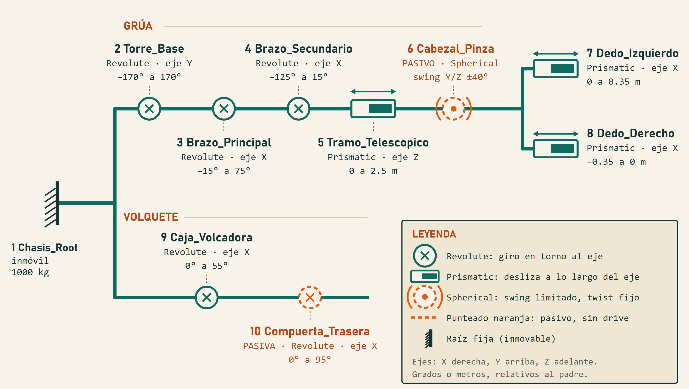

Simulador de camión volcador con hidrogrúa (Articulation Body)
| Nombre y apellido | COMPLETAR | Hoja | 1/3 |
| Repositorio | COMPLETAR | Fecha | 2026-11-23 |
| Build (itch.io) | COMPLETAR | Motor | Unity 6000.3.14f1 |
| Video (YouTube) | COMPLETAR | Rev. / Escala | A · s/e |
Modelamos un camión volcador con hidrogrúa: una grúa articulada con pinza de dos dedos montada detrás de la cabina. La operación tiene dos tiempos. En la carga, la grúa levanta del suelo cubos de 8 kg y los deja en la caja; el cubo se sostiene solo por fricción, no está atado al cabezal. En la descarga plegamos la grúa, inclinamos la caja hasta 55° y las cargas, al deslizar, empujan la compuerta trasera hasta abrirla y caen al corralón; al bajar la caja la compuerta se cierra sola. Elegimos esta máquina porque reúne en un único árbol los tres tipos de joint, una cadena larga que soporta peso real y dos uniones pasivas gobernadas por contacto.
Diez cuerpos en un único árbol. Chasis_Root es la raíz fija y de él cuelgan dos ramas: la grúa (torre, pluma, brazo secundario, telescópico, cabezal y dos dedos) y el volquete (caja y compuerta). Los ejes y límites están en el sistema local de cada unión; los ángulos van en grados y los desplazamientos en metros, relativos al cuerpo padre.

TruckSpec). Trazo punteado naranja: unión pasiva.